תצלומי רכיבים וציוד מהאינטרנט. כאשר לא הוגדר דגם, התמונה היא להמחשה; מתח והספק במודל אינם זיהוי הדגם המצולם. לחצו על רכיב בסכמה כדי לפתוח את הכרטיס שלו כאן.
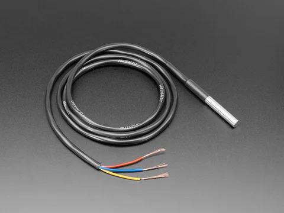
Waterproof 1-Wire DS18B20 Digital temperature sensor : Adafruit Industries, Unique & fun DIY electronics and kits
Adafruit Industries · Manufacturer product photograph; copyright retained by owner
Resized onlyמקור התצלום ↗
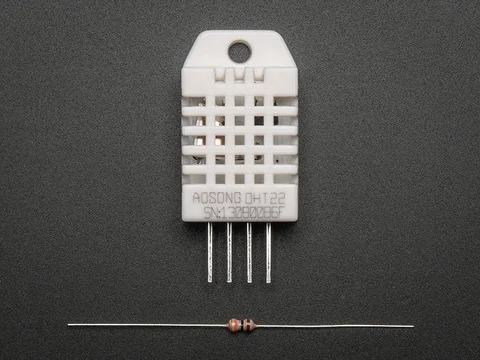
DHT22 temperature-humidity sensor + extras : Adafruit Industries, Unique & fun DIY electronics and kits
Adafruit Industries · Manufacturer product photograph; copyright retained by owner
Resized onlyמקור התצלום ↗
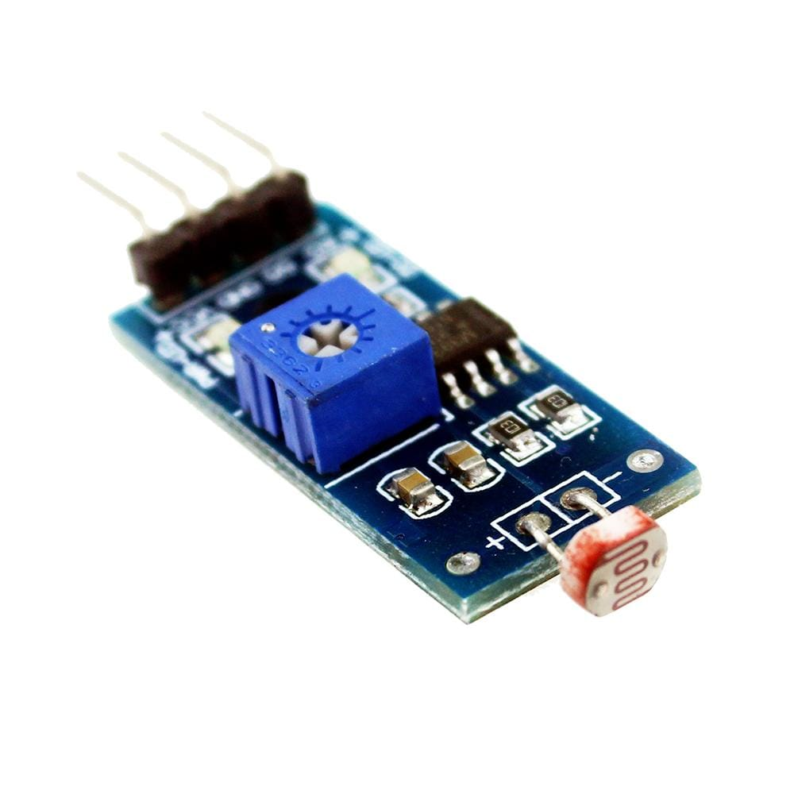
LM393 light sensor module · AO + DO
Tenet Technetronics · Product photograph; copyright retained by source owner
Unmodifiedמודול אור · הזנה 3.3V DC
זה עדיין חיישן LDR, עם מעגל משווה LM393 ושני סוגי יציאה. בפרויקטים משתמשים ביציאת AO למדידת אור יחסית רציפה; DO הוא פלט סף דיגיטלי אופציונלי, המכוון בפוטנציומטר.
VCC → 3.3V · GND → ESP32 GND · AO → ADC1 input (e.g. GPIO34, input only) · DO → optional digital input, unused in these projects.
אין לחבר יציאות ממודול המוזן ב־5V ישירות ל־ESP32. סדר הפינים משתנה בין יצרנים: מחברים לפי הסימון על הלוח. יש לכייל ערכי חושך ואור במודול בפועל; אחוזי הסימולציה הם יחסיים ולא מדידת Lux. בדגם המתועד AO יורד כשהאור עולה; DO נמוך מעל הסף. הפוטנציומטר מכוון את סף DO, לא את ספי התוכנה.
תיעוד SunFounder למודול AO/DO ↗ · התיעוד הוא לדוגמה מאותה משפחה; יצרן הלוח המצולם אינו מזוהה.
מקור התצלום ↗
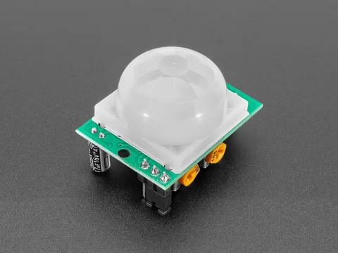
PIR (motion) sensor : Adafruit Industries, Unique & fun DIY electronics and kits
Adafruit Industries · Manufacturer product photograph; copyright retained by owner
Resized onlyמקור התצלום ↗
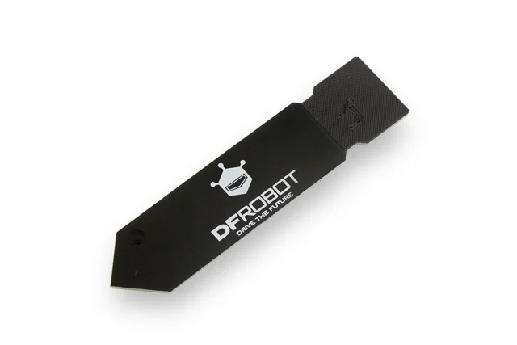
Cost-Effective Capacitive Soil Moisture Sensor for Indoor Plant Care and Environmental Science
www.dfrobot.com · Product photograph; copyright retained by source owner
Resized onlyמקור התצלום ↗
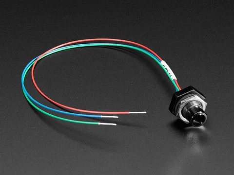
Optomax Digital Liquid Level Sensor [LLC200D3SH-LLPK1] : Adafruit Industries, Unique & fun DIY electronics and kits
Adafruit Industries · Manufacturer product photograph; copyright retained by owner
Resized onlyמקור התצלום ↗
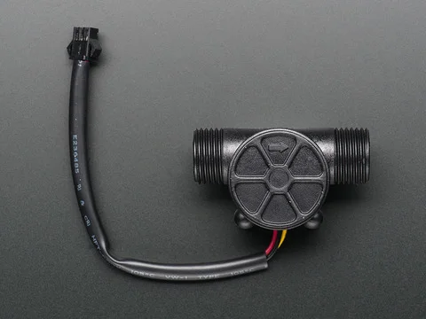
Liquid Flow Meter - Plastic 1/2 NPS Threaded : Adafruit Industries, Unique & fun DIY electronics and kits
Adafruit Industries · Manufacturer product photograph; copyright retained by owner
Resized onlyמקור התצלום ↗
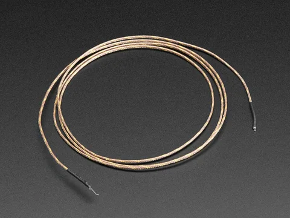
Thermocouple Type-K Glass Braid Insulated [K] : Adafruit Industries, Unique & fun DIY electronics and kits
Adafruit Industries · Manufacturer product photograph; copyright retained by owner
Resized onlyמקור התצלום ↗
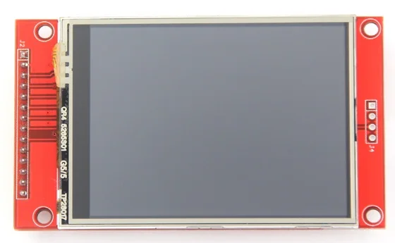
ILI9341 / XPT2046 MSP2807
LCDwiki · Manufacturer documentation image
Resized and croppedמקור התצלום ↗
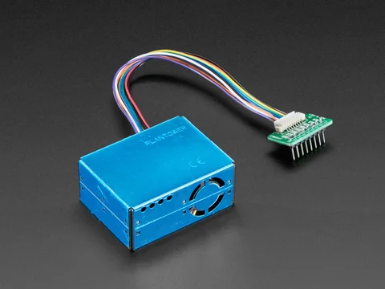
PM2.5 Air Quality Sensor and Breadboard Adapter Kit [PMS5003] : Adafruit Industries, Unique & fun DIY electronics and kits
Adafruit Industries · Manufacturer product photograph; copyright retained by owner
Resized onlyמקור התצלום ↗
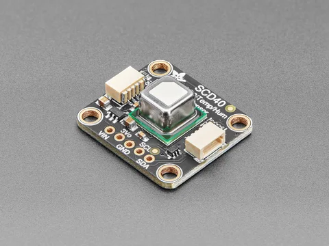
Adafruit SCD-40 - True CO2, Temperature and Humidity Sensor [STEMMA QT / Qwiic] : Adafruit Industries, Unique & fun DIY electronics and kits
Adafruit Industries · Manufacturer product photograph; copyright retained by owner
Resized onlyמקור התצלום ↗
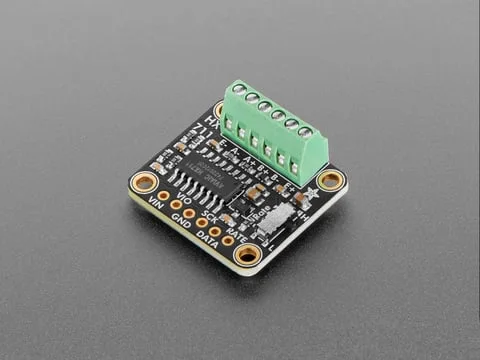
Adafruit HX711 24-bit ADC for Load Cells / Strain Gauges : Adafruit Industries, Unique & fun DIY electronics and kits
Adafruit Industries · Manufacturer product photograph; copyright retained by owner
Resized onlyמקור התצלום ↗
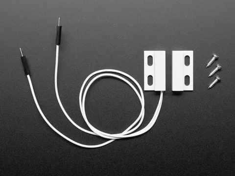
Magnetic contact switch (door sensor) : Adafruit Industries, Unique & fun DIY electronics and kits
Adafruit Industries · Manufacturer product photograph; copyright retained by owner
Resized onlyמקור התצלום ↗
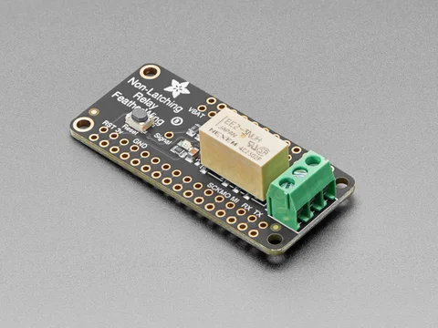
Adafruit Non-Latching Mini Relay FeatherWing : Adafruit Industries, Unique & fun DIY electronics and kits
Mini Relay · אינו הממסר שנבחר לעומסי הפרויקטים
Adafruit 2895 תואם לוגיקת Feather, אך דירוג המגע ב־250VAC הוא 0.3A בלבד לפי היצרן. הוא הוחלף בשרשראות האתר ב־Power Relay 3191, בכפוף לדירוג העומס. אין להסיק ממתח הבקרה שהמגע מתאים לעומס הספק.
מסמך יצרן 1 ↗ · מסמך יצרן 2 ↗Adafruit Industries · Manufacturer product photograph; copyright retained by owner
Resized onlyמקור התצלום ↗
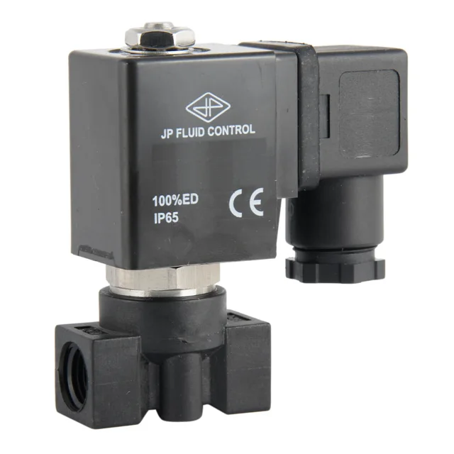
Solenoid Valve ST-DA 1/4'' nylon EPDM 0-8bar 230V AC | Tameson
tameson.com · Manufacturer product photograph
Resized onlyמקור התצלום ↗
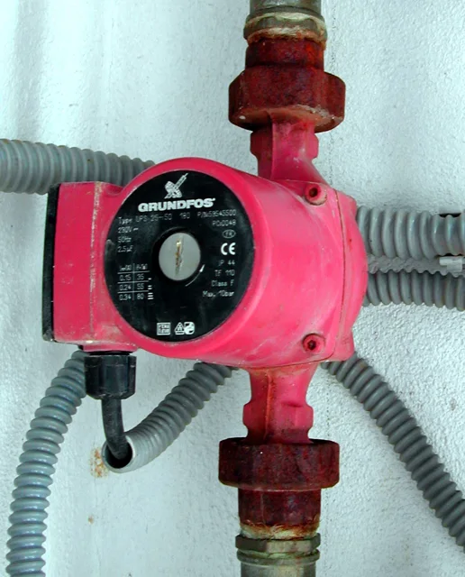
water circulation pump
· CC BY-SA 3.0
Resized onlyמקור התצלום ↗ · רישיון
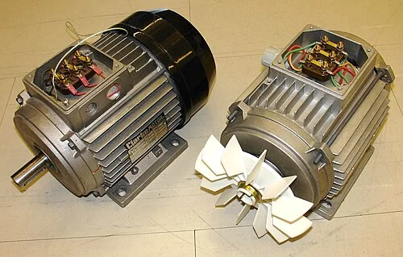
electric motor
Zureks · CC BY-SA 3.0
Resized onlyמקור התצלום ↗ · רישיון
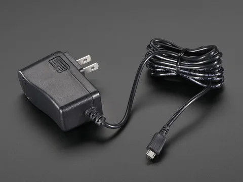
5V 2.5A Switching Power Supply with 20AWG MicroUSB Cable : Adafruit Industries, Unique & fun DIY electronics and kits
Adafruit Industries · Manufacturer product photograph; copyright retained by owner
Resized onlyמקור התצלום ↗
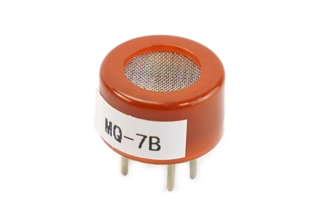
MQ7 Carbon Monoxide Sensor 20-2000ppm Analog Output - DFRobot
www.dfrobot.com · Product photograph; copyright retained by source owner
Resized onlyמקור התצלום ↗
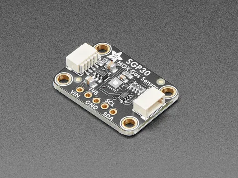
Adafruit SGP30 Air Quality Sensor Breakout - VOC and eCO2 [STEMMA QT / Qwiic] : Adafruit Industries, Unique & fun DIY electronics and kits
Adafruit Industries · Manufacturer product photograph
Resized onlyמקור התצלום ↗
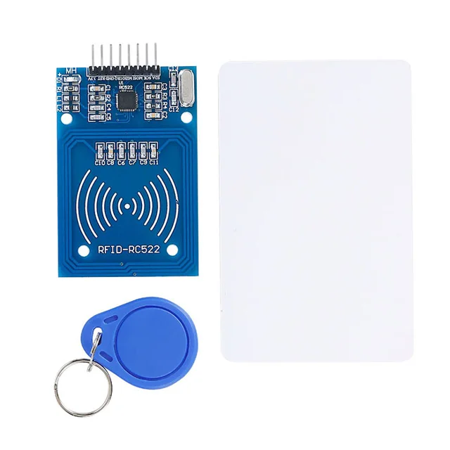
RFID Kit for Arduino Raspberry Pi With Mifare RC522 RFID Reader Module | SunFounder
www.sunfounder.com · Product photograph; copyright retained by source owner
Resized onlyמקור התצלום ↗
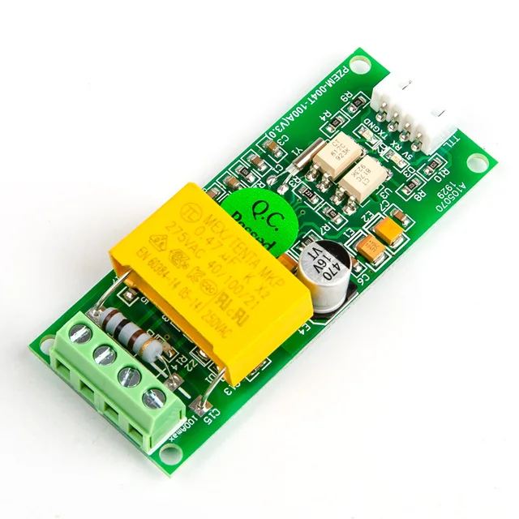
PZEM-004T AC Energy Meter & Power Monitor Module with Current Transformer | ShillehTek
shillehtek.com · Product photograph; copyright retained by source owner
Resized onlyמקור התצלום ↗
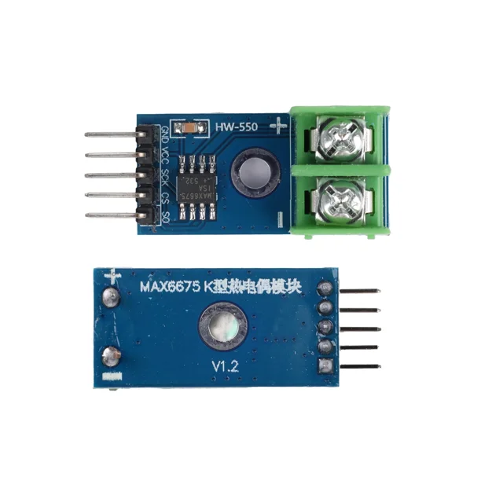
MAX6675 Module with K-Type Thermocouple Sensor (Measures up to 1024 Degrees) | ShillehTek
ShillehTek · Manufacturer product photograph
Resized onlyמקור התצלום ↗
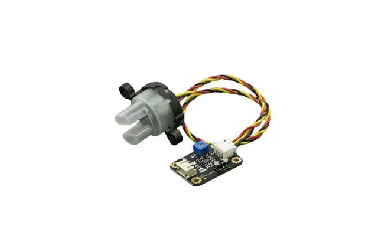
Gravity: Analog Turbidity Sensor for Arduino - DFRobot
www.dfrobot.com · Product photograph; copyright retained by source owner
Resized onlyמקור התצלום ↗
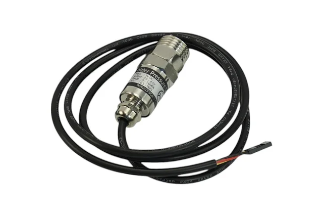
Gravity: Analog Water Pressure Sensor - DFRobot
www.dfrobot.com · Product photograph; copyright retained by source owner
Resized onlyמקור התצלום ↗
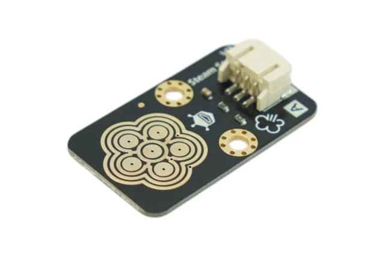
Gravity: Analog Steam & Water Sensor (3.3V/5V) - DFRobot
www.dfrobot.com · Product photograph; copyright retained by source owner
Resized onlyמקור התצלום ↗
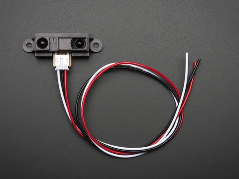
IR distance sensor includes cable (10cm-80cm) [GP2Y0A21YK0F] : Adafruit Industries, Unique & fun DIY electronics and kits
www.adafruit.com · Product photograph; copyright retained by source owner
Resized onlyמקור התצלום ↗
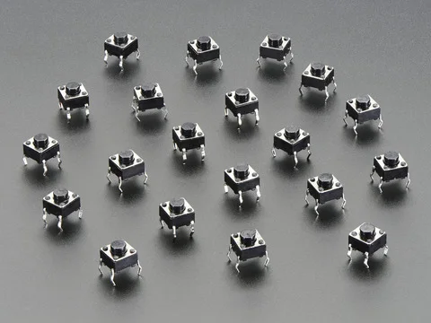
Tactile Button switch (6mm) x 20 pack : Adafruit Industries, Unique & fun DIY electronics and kits
www.adafruit.com · Product photograph; copyright retained by source owner
Resized onlyמקור התצלום ↗
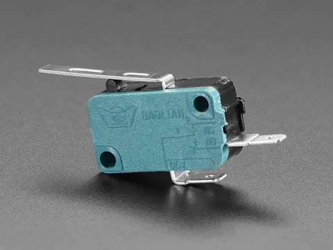
Micro Switch w/Lever - 2 Terminal : Adafruit Industries, Unique & fun DIY electronics and kits
www.adafruit.com · Product photograph; copyright retained by source owner
Resized onlyמקור התצלום ↗
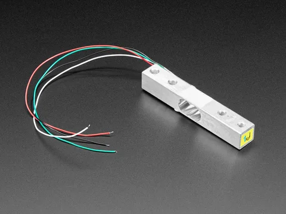
Strain Gauge Load Cell - 4 Wires - 1Kg : Adafruit Industries, Unique & fun DIY electronics and kits
www.adafruit.com · Product photograph; copyright retained by source owner
Resized onlyמקור התצלום ↗
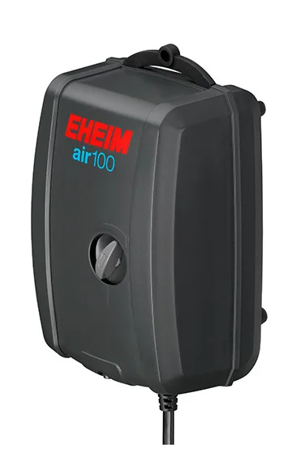
airpump
eheim.com · Product photograph; copyright retained by source owner
Resized onlyמקור התצלום ↗
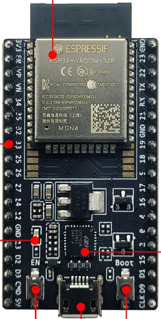
ESP32-DevKitC V4
Espressif Systems · Manufacturer documentation image
Resized; cropped and rotatedמקור התצלום ↗
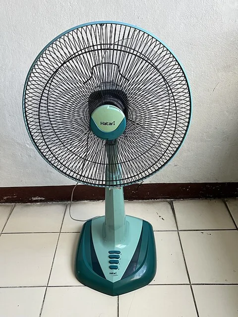
electric desk fan
Peachyo · CC BY-SA 4.0
Resized onlyמקור התצלום ↗ · רישיון
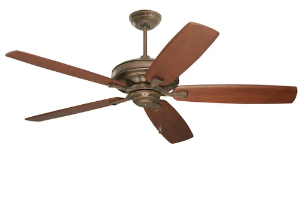
ceiling fan
Antonio Mette · CC BY-SA 4.0
Resized onlyמקור התצלום ↗ · רישיון
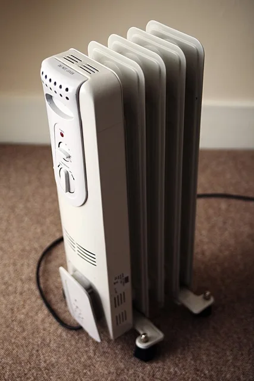
electric oil radiator
Ashley Pomeroy · CC BY 3.0
Resized onlyמקור התצלום ↗ · רישיון
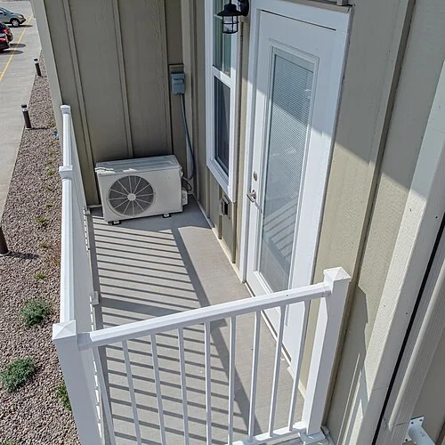
air source heat pump unit
Wikideas1 · CC0
Resized onlyמקור התצלום ↗ · רישיון
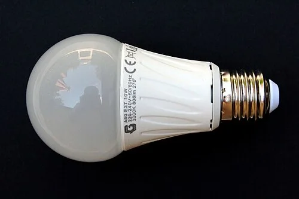
LED light bulb
Zátonyi Sándor, (ifj.) Fizped · CC BY 3.0
Resized onlyמקור התצלום ↗ · רישיון
LED grow light
Hotmilk400 · CC BY-SA 4.0
Resized onlyמקור התצלום ↗ · רישיון
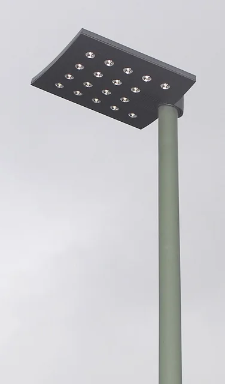
LED street light
Cgwalther · CC BY-SA 2.5
Resized onlyמקור התצלום ↗ · רישיון
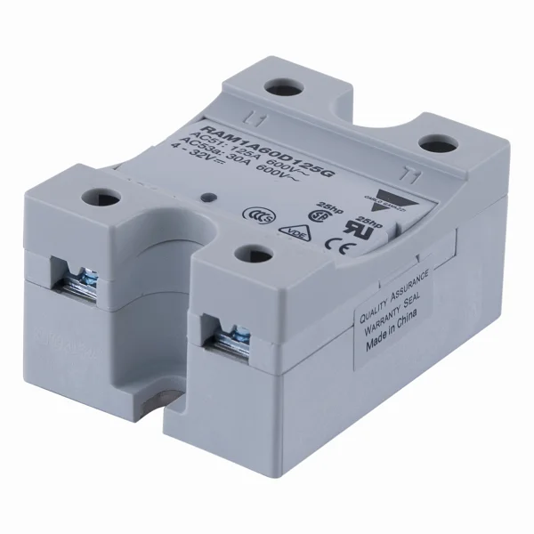
Carlo Gavazzi RM1A family · design example RM1A23D25
תלוי בדגם המדויק · לא כל SSR מתאים ל־3.3V
הצילום הוא Carlo Gavazzi, לא Fotek. דוגמת התכן שנבחרה היא RM1A23D25: כניסת 3–32V DC וזרם כניסה עד 12mA. גרסאות RM1A40/48/60 D דורשות 4–32V DC. בתכן האתר ה־GPIO מפעיל MOSFET תואם 3.3V, וה־SSR מקבל אות 5V ממקור נפרד. צילום משפחת המוצרים אינו הוכחה לסיומת הדגם.
מסמך יצרן 1 ↗Jason Demicoli · CC BY-SA 4.0
Resized onlyמקור התצלום ↗ · רישיון
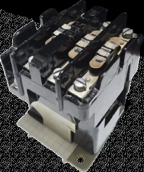
contactor
מתח הסליל אינו ידוע מצילום · לא GPIO ישיר
יש לבחור דגם עם סליל 24V DC וזרם התנעה/החזקה המתאים לדרייבר MOSFET שנבחר. מתח וסוג הסליל של המגען בתצלום לא זוהו. סליל AC או 230V אינו מתחבר לדרייבר DC זה. דירוג מגעי הכוח והגנת הסליל נבחרים לפי מסמכי הדגם.
מסמך יצרן 1 ↗im_tau · CC BY 4.0
Resized onlyמקור התצלום ↗ · רישיון
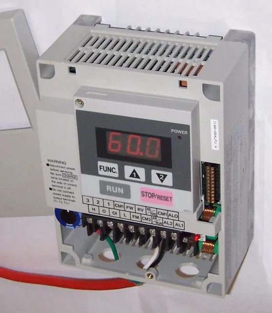
variable frequency drive
תאימות GPIO 3.3V לא אומתה לדגם המצולם
אין דגם מזוהה או מפרט כניסת בקרה לתצלום זה. אין לחבר GPIO לכניסת מתח תעשייתית. באתר מופיע כעת ממיר 3.3V I²C ל־0–10V, ורק בקר או מנוע שתואמים במפורש לממשק זה ולסוג המנוע יוכלו להיבחר. ווסת תדר רגיל אינו פתרון כללי למנוע חד־פאזי.
מסמך יצרן 1 ↗C J Cowie · CC BY-SA 3.0
Resized onlyמקור התצלום ↗ · רישיון
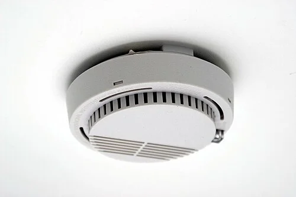
photoelectric smoke detector
Tumi-1983 · CC BY-SA 3.0
Resized onlyמקור התצלום ↗ · רישיון
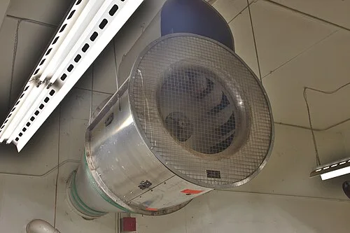
centrifugal fan
Saud · CC BY-SA 4.0
Resized onlyמקור התצלום ↗ · רישיון
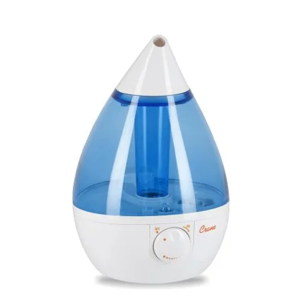
ultrasonic humidifier
Roecrew · CC BY-SA 4.0
Resized onlyמקור התצלום ↗ · רישיון
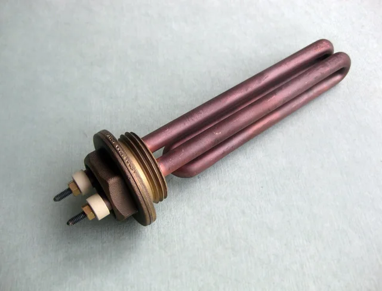
electric tubular heating element
Acosta.eu · CC BY-SA 3.0
Resized onlyמקור התצלום ↗ · רישיון
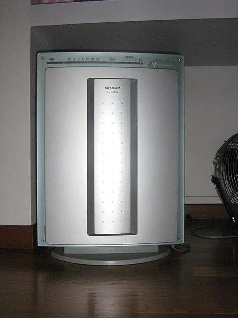
air purifier
SpLoT · CC BY 2.5
Resized onlyמקור התצלום ↗ · רישיון
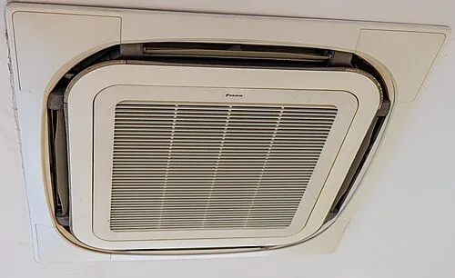
wall air conditioner indoor unit
Dinkun Chen · CC BY-SA 4.0
Resized onlyמקור התצלום ↗ · רישיון
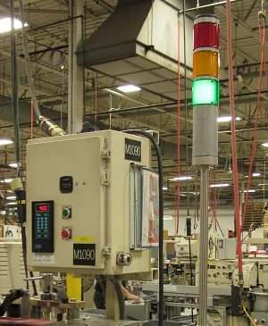
industrial warning light
Ktm250-1150gs · CC BY-SA 3.0
Resized onlyמקור התצלום ↗ · רישיון
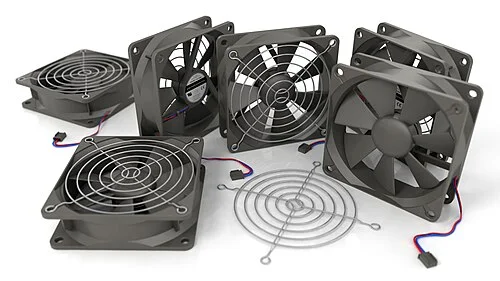
fanAxial
צילום להמחשה · מתח המאוורר לא זוהה
בתצלום מופיעים מאווררי מחשב. הוא אינו מאשר מתח הזנה 3.3V או 230V, או ממשק ויסות. לפרויקט יש לבחור דגם מאוורר וממשק בקרה מתועדים. במודל נשמרת הפרדה בין אות הלוגיקה 3.3V לבין הזנת המאוורר.
cappie2000 · Public domain
Resized onlyמקור התצלום ↗
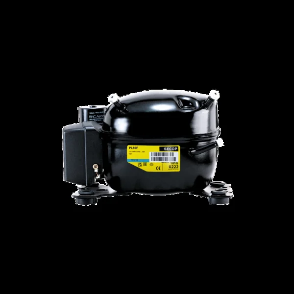
Secop PL hermetic AC refrigeration compressor
Secop · Manufacturer product photograph
Resized onlyמקור התצלום ↗
EHEIM thermocontrol 200
EHEIM · Manufacturer product photograph
Resized onlyמקור התצלום ↗
EHEIM reeflexUV
EHEIM · Manufacturer product photograph
Resized onlyמקור התצלום ↗
aquariumPump
eheim.com · Manufacturer product photograph
Resized onlyמקור התצלום ↗
Lighting dimmer
דימר ידני · אינו כניסת בקרה 3.3V
הדימר בתצלום אינו מודול GPIO ולא נבחר עוד לשרשרת ההפעלה. עמעום במודל דורש ממיר DFR0971 בצד 3.3V ודרייבר תאורה בעל כניסת 0–10V מתאימה. לדוגמה, מפרט HLG B דורש 1–10V או PWM ברמת 10V, לא PWM של 3.3V ישירות.
מסמך יצרן 1 ↗ · מסמך יצרן 2 ↗BrokenSphere · CC BY-SA 3.0
Resized onlyמקור התצלום ↗ · רישיון
Centrifugal water pump
Saud · CC BY-SA 4.0
Resized onlyמקור התצלום ↗ · רישיון
Submersible drainage pump
Mar11 · CC BY-SA 4.0
Resized onlyמקור התצלום ↗ · רישיון
Oven upper / grill heating element
CSB Service · Product photograph; copyright retained by source owner
Resized onlyמקור התצלום ↗
Electric sauna heater in a Finnish home sauna
Tulikivi2012 · CC BY-SA 3.0
Resized onlyמקור התצלום ↗ · רישיון
Adafruit STEMMA MOSFET Driver · 3.3V logic input
כניסת לוגיקה תואמת 3.3V DC
Adafruit 5648: כניסת IN של 3–20V לפי דף המוצר, והזנת עומס 3–30V נפרדת. דרייבר low-side לעומסי DC בלבד, עד 1.5A רציף לפי היצרן. אינו מיועד למיתוג 230V AC ישירות. באתר משמש להפעלת כניסת SSR ב־5V, או לסליל DC מתאים לאחר בחירתו.
מסמך יצרן 1 ↗ · מסמך יצרן 2 ↗Adafruit Industries · Manufacturer product photograph; copyright retained by owner
Resized onlyמקור התצלום ↗
Adafruit Power Relay FeatherWing · 3.3V logic / 3.3V coil rail
3.3V SET · סליל מוזן בנפרד מה־GPIO
Adafruit 3191 תואם לוגיקת Feather 3.3V. סליל פעיל צורך כ־100mA ממסילת 3.3V, לא מפין GPIO. יש לתקצב מקור 3.3V לכל הסלילים. דירוג היצרן: 5A לעומס התנגדותי ב־240VAC, ובקירוב חצי לעומס השראותי; יש לבדוק זרם התנעה ומפרט העומס.
מסמך יצרן 1 ↗ · מסמך יצרן 2 ↗ · מסמך יצרן 3 ↗Adafruit Industries · Manufacturer product photograph; copyright retained by owner
Resized onlyמקור התצלום ↗
DFRobot GP8403 · I2C 3.3V to 0–10V DAC
I²C 3.3V → יציאה אנלוגית 0–10V
DFRobot DFR0971 / GP8403: הזנה 3.3–5V, רמת HIGH 2.7–5V ב־I²C, יציאה 0–10V. Pull-ups אל 3.3V בלבד. זה ממיר אות, לא דרייבר הספק ולא בידוד מרשת. יש לבחור מנוע EC, דרייבר LED או בקר עם כניסת 0–10V תואמת ו־SELV מבודד, או להוסיף מתאם מבודד.
מסמך יצרן 1 ↗DFRobot · Manufacturer product photograph; copyright retained by owner
Resized onlyמקור התצלום ↗